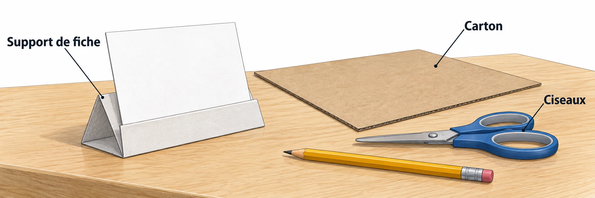

OBSERVER · EXPÉRIMENTER · EXPLIQUER
Un support plus stable
Dessine deux renforts, prépare ton patron et teste le support fabriqué.

✎ Garde ta feuille à côté de toi.Ordinateur : manipulations et mesures simulées. Papier : relevés, réponses, calculs et croquis.
Comparer puis fabriquer un renfort
- Dessine deux renforts différents pour éviter que le support bascule : par exemple une forme triangulaire et une forme en accordéon. Note une dimension et un avantage pour chacun.
- Choisissez une solution en groupe à partir des exigences de la fiche. Répartissez découpe, pliage, assemblage et test. Chacun réalise une étape et explique son rôle.
- Fabriquez le renfort. Comparez avec et sans renfort sous la même charge. Note le résultat et une amélioration ; conserve les deux croquis.
Sur ta feuille
Garde tes réglages, tes résultats et tes explications dans l’ordre des questions.